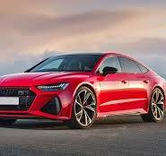
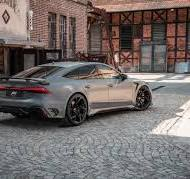
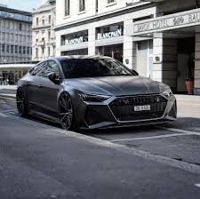
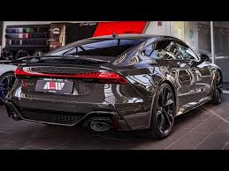

О автомобиле Audi RS7
Audi RS7 - это мощный и стильный автомобиль, который сочетает в себе роскошь и высокие технологии. Его элегантный дизайн и производительность делают его одним из лучших в своем классе.

Дизайн
Экстерьер Audi RS7 выделяется благодаря спортивному силуэту и агрессивным линиям. Каждый элемент дизайна был тщательно продуман, чтобы создать гармоничный и привлекательный внешний вид.

Производительность
Audi RS7 оснащен мощным двигателем, который обеспечивает впечатляющую динамику и быстроту. Это идеальный автомобиль для тех, кто ценит скорость и комфорт.

Технологии
В Audi RS7 используются самые передовые технологии, которые делают вождение безопасным и комфортным. Среди них системы помощи водителю, высококачественная аудиосистема и многое другое.
